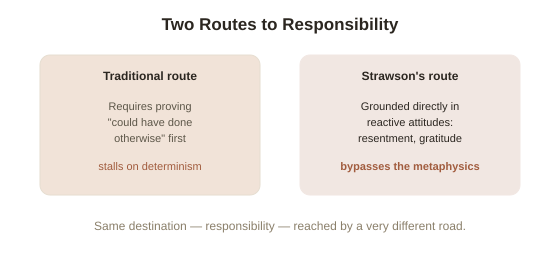

Chapter 3: Moral Responsibility Without Libertarian Free Will
Chapter 2 left the metaphysics of decision-making genuinely unresolved. But there's a more practical question hiding underneath the whole debate, one that matters regardless of how the metaphysics eventually shakes out: if it turns out nobody could ever really have done otherwise, does that mean praise, blame, punishment, and gratitude all stop making sense? Philosopher Peter Strawson argued, in a highly influential 1962 paper, that the honest answer is more surprising than either side of the free will debate usually admits.
The traditional worry: no free will, no responsibility
The intuitive chain of reasoning runs like this: moral responsibility requires that you could have done otherwise; determinism (in its hard form) says you never could have; therefore determinism, if true, dissolves moral responsibility entirely — nobody genuinely deserves praise, blame, punishment, or credit for anything, since it was all fixed in advance by prior causes nobody chose. This is a serious, still-debated position called hard incompatibilism (the view that free will and moral responsibility are both incompatible with determinism, and since determinism is true, neither free will nor genuine moral responsibility actually exist), defended today by philosophers like Derk Pereboom and Galen Strawson (no relation to Peter Strawson).
Peter Strawson's move: responsibility was never really about metaphysics
Strawson's paper, "Freedom and Resentment," argued that this entire framing gets the psychology backward. Human beings don't actually arrive at praise, blame, gratitude, and resentment through a metaphysical argument about causation — these are reactive attitudes (the natural, largely automatic emotional responses people have to how others treat them — resentment at being wronged, gratitude at being helped, guilt at wronging someone yourself), and they're a basic, near-universal part of human social life that would persist even if every philosopher in the world became convinced of hard determinism tomorrow. Nobody actually stops feeling genuine gratitude toward a friend who helped them, or genuine anger at someone who betrayed them, because they've accepted an abstract argument about the causal history of neurons. Strawson's claim is that this isn't a failure of rationality on everyone's part — it's evidence that the reactive attitudes were never actually resting on the metaphysical premise the traditional argument assumed they needed.

When we actually do suspend blame — and why it's revealing
Strawson's strongest evidence is the cases where reactive attitudes genuinely do switch off, and looking closely at those cases shows they're never about global determinism. Nobody resents a small child, or someone having a severe psychotic episode, or someone who physically bumped into them because they were pushed — not because these people's actions weren't caused (everyone's actions are caused, on any view), but because something specific about their situation exempts them: immaturity, a compromised capacity for reasoning, or a lack of any real choice in the moment. These are the actual, ordinary conditions people rely on to excuse someone — not "was universal determinism true when this happened," which nobody in daily life ever actually checks, but much narrower, practical questions like "did they understand what they were doing" and "could they, realistically, in that specific situation, have acted differently." Strawson's argument is that this is what responsibility was actually tracking all along — not some deeper metaphysical fact philosophers had been chasing, but exactly these ordinary, situational exemptions.
The trade-off this reframing doesn't erase
Strawson's account is influential, but it isn't a knockout blow to hard incompatibilism, and it's worth being honest about what it leaves standing. A hard incompatibilist can accept everything Strawson says about how reactive attitudes psychologically function, and still insist that the deeper question — whether people genuinely deserve praise or blame in some ultimate, ledger-balancing sense, as opposed to it simply being a useful and near-universal human practice — is left completely untouched. That distinction matters most sharply in punishment: a purely practical justification (deterrence, rehabilitation, protecting others) survives determinism just fine, but a purely retributive justification (punishment because the person deserves to suffer for what they did, independent of any further benefit) is exactly the kind of claim hard incompatibilists argue determinism should make us give up. Strawson's paper reframes the everyday psychology of responsibility persuasively. It doesn't settle whether retribution, specifically, can survive the metaphysics — which is precisely the question the legal system has to answer in practice, whether or not it ever states the question explicitly.
Try this
Ideas for noticing or testing this in your own life.
- Next time you feel resentment toward someone, check what you're actually tracking: is it "they could have metaphysically done otherwise," or something much narrower and more practical — did they understand what they were doing, and did they have a realistic alternative in that moment?
- Notice the specific conditions under which you naturally excuse someone (age, duress, illness, genuine ignorance) and see how well they match Strawson's account of situational exemptions rather than a global claim about determinism.
Worth pulling on?
A few loose threads from this chapter — if any of these genuinely grab you, that's a good sign of where to go next.
- "Could they, realistically, have acted differently" turns out to be exactly the question a separate, more technical philosophical argument was built to attack directly — by showing that the ability to do otherwise might not even be necessary for responsibility in the first place. → The subject of the next chapter: Frankfurt cases.
- The distinction between retributive and purely practical justifications for punishment is exactly the fault line running through real sentencing debates and criminal justice reform. → Not covered in depth here — the next chapter picks it up from the legal system's side directly.